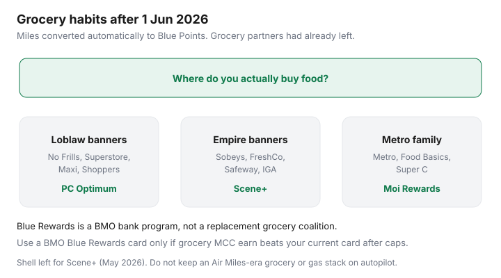

Food & Groceries · Canada
Air Miles is changing: what Canadian grocery shoppers should do before Blue Rewards
If your grocery strategy is still “I collect Air Miles at the supermarket,” it is several years out of date — and the 2026 program change does not fix that. On 1 June 2026 BMO converted AIR MILES balances to Blue Rewards (Blue Points). That was a bank-program swap, not a new way to earn free chicken at No Frills.
This guide is for grocery shoppers, not travel-miles collectors. The job is: understand what retired, decide whether leftover value should be spent, migrate the weekly till scan to PC Optimum, Scene+, or Moi, and only then ask whether a BMO Blue Rewards card belongs in the wallet. Educational comparison only — not a recommendation to apply.
Disclosure: BMO Blue Rewards Mastercards, PC Financial cards, Scotiabank Scene+ cards, and the moi RBC Visa are offer types. Saving Optimizer may earn a commission if we later add partner links. We do not currently claim issuer partnerships. Fees, caps, and partner lists change. Confirm on the issuer’s site. Pay in full. This is not credit advice.
Key takeaways
- Conversion date: 1 Jun 2026, automatic. Explainers cited 16 Blue Points per Mile and redemptions from 2 Jun.
- Empire left for Scene+ in 2022–23. Metro Ontario left for Moi. Major grocery coalition earn was already gone.
- Shell moved to Scene+ (May 2026 reporting). Do not keep an Air Miles-era gas-plus-grocery stack.
- Spend Blue Points on things you already buy if the live catalogue is useful; do not hoard a fixed-rate currency for a “dream” chart that no longer exists.
- Scan the program that matches your banner. A BMO card is optional overlay with grocery MCC caps — not a till replacement.
What’s retiring and what’s replacing it (high-level)
BMO announced Blue Rewards as AIR MILES’ successor in January 2026 and completed the collector conversion on 1 June 2026 (BMO transition page; Rewards Canada; The Points Standard — reviewed 2 Sep 2026). Public messaging: balances convert automatically, sign-in stays, “no loss in value” at the cash rate. What changed is structure. AIR MILES was a coalition with Cash vs Dream quirks. Blue Rewards is a fixed-rate BMO program with retail partners and co-branded Mastercards. Dream-style upside is not the product.
Some retail partners (pharmacies and specialty stores among them) carried over. That is not the same as Sobeys putting Miles on a grocery receipt. If a partner still shows in the Blue Rewards directory, treat it as a bonus, not a meal plan.
Grocery partners historically tied to Air Miles
| Banner family | Air Miles era | Scan this now |
|---|---|---|
| Sobeys, Safeway, FreshCo, IGA, Foodland, Thrifty Foods | Left 2022–early 2023 for Scene+ | Scene+ (load offers) |
| Metro, Food Basics (Ontario) | Left for Moi (announced 2024; Ontario rollout) | Moi Rewards |
| Loblaw banners, Shoppers | Never the Air Miles grocery home | PC Optimum |
| Save-On / Pattison (West) | Card-linked / More Rewards territory — not a national Air Miles till | Store program + whatever the live partner directory still lists |

Should you burn remaining miles now?
If you still see Miles in an old screenshot, open the live account: you should see Blue Points. Hoarding a fixed-rate bank currency for a travel chart that retired is nostalgia. Redeem toward something you would buy anyway if the catalogue (statement credit, merchandise, remaining partners) is fairly priced. If the live redemption looks worse than grocery 1¢ Scene+ or 0.1¢ PC Optimum, spend the Blue Points on a non-grocery redemption and stop using grocery as the excuse to keep the program central.
Do not panic-buy junk at a leftover partner to “empty the account.” That is the same trap as a bad Shoppers haul.
Migrating habits to PC Optimum, Scene+, or Moi
This is the actual grocery work:
- Name your primary banner. One is enough for most weeks.
- Install the matching app: PC Optimum, Scene+ (Empire store app / MyGroceryOffers), or Moi.
- Load offers every Sunday inside the weekly system.
- Stop presenting an Air Miles card at grocery. It trains you to think a coalition still exists.
- Read the three-program comparison: PC vs Scene+ vs Moi.
Quebec Metro shoppers were already on Moi; Ontario caught up. Empire FreshCo shoppers never had Air Miles as a discounter program in the Scene+ era — offers only. Loblaw shoppers should ignore this nostalgia entirely and load PC offers.
Credit card grocery earn without Air Miles
BMO’s Blue Rewards World Elite Mastercard materials (Rewards Canada card pages, reviewed Sep 2026) describe grocery / wholesale / gas earn at 2 Blue Points per $1 with a monthly cap (often cited at $500 of that category on the World Elite), plus a higher earn at participating Blue Rewards partners with its own cap. The no-fee card earns less. Eligible grocery is MCC 5411 — Costco often codes as wholesale, which may be in the same bucket. Caps mean this is not an uncapped 6% Scene+ clone.
Compare that to what you already have: a no-fee PC World Elite at ~3% PC points at Loblaw, a Scene+ Visa at 2× Empire, or Gold Amex at 6× Empire before the $120 fee. If you do not bank at BMO and your grocer is No Frills, a Blue Rewards card is a solution to a problem you do not have. Details in cards by banner.
Do not keep the old BMO Air Miles card in the grocery slot on autopilot. Replacement Blue Rewards earn and caps differ from the Miles-era grocery rate. Read the current certificate. Pay the statement. Interest is not a points strategy.
Checklist for the transition window
- Log in; confirm Blue Points posted; screenshot the balance once.
- Redeem anything you will actually use in the next 90 days.
- Unlink grocery autopilot: remove the old card from Sobeys/Metro wallets if it is still sitting there as a ghost.
- Join or revive PC Optimum / Scene+ / Moi. Load this week’s offers.
- Reprice gas: Shell is Scene+; Esso is PC Optimum; Petro-Canada is Petro-Points (pump comparison).
- Only then, if you like BMO, run grocery MCC math on Blue Rewards versus the card you already pay off.
Coalition grocery is over. Banner programs remain. Shop the shelf, scan the right app, treat Blue Rewards as optional bank plumbing.
Sources & date stamps
- BMO, AIR MILES transition to Blue Rewards (conversion summer / 1 Jun 2026 messaging) reviewed 2 Sep 2026.
- Rewards Canada and The Points Standard conversion explainers (16 Blue Points per Mile; 2 Jun redemptions; card earn/caps).
- Empire Scene+ rollout coverage 2022–23 (Sobeys/Safeway exit from AIR MILES).
- Metro / Food Basics Ontario move to Moi Rewards (2024 announcements; program now the till scan).
- Shell Go+ / Scene+ transition reporting (May 2026).
Frequently asked questions
When did AIR MILES become Blue Rewards?
BMO converted collector balances on 1 June 2026. Redemptions in the new currency were described as available from 2 June 2026. Conversion was automatic; collectors were told they did not need to opt in.
Did I lose value in the conversion?
BMO’s public claim was no loss in value, with Miles converting to Blue Points (Canadian explainers cited 16 Blue Points per Mile). Dream-class redemptions that sometimes beat cash are gone. Treat Blue Points as a fixed-rate bank currency and verify your balance in the live account.
Can I still collect at Sobeys or Metro with Air Miles?
Not as a grocery coalition. Empire banners moved to Scene+ in 2022–2023. Metro and Food Basics in Ontario moved to Moi (announced for late 2024). By the Blue Rewards launch, major grocers were already on their own programs.
Should I get a BMO Blue Rewards Mastercard for groceries?
Only after you price the grocery MCC earn, monthly caps, and whether Empire/Loblaw/Metro tills already pay a better co-branded card. Blue Rewards is not a replacement for scanning PC Optimum, Scene+, or Moi. This is not an application recommendation.
What about Shell and Air Miles?
Shell left AIR MILES for Scene+ (community and program reporting around 25 May 2026). Pump strategy now lives in Scene+ / Shell Go+, not Blue Rewards nostalgia. See our gas-loyalty comparison.